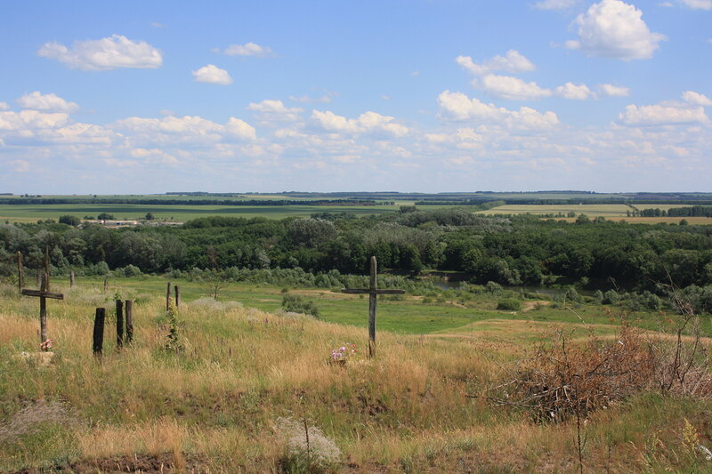
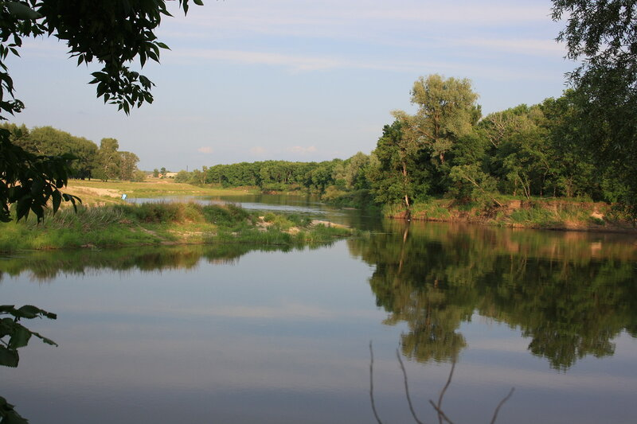

Весь прошедший месяц провел с младшей внучкой в Борисоглебске. Многое повидал за свою жизнь, но такого приволья, такого солнца, такой атмосферы, которая насыщена дыханьем вечности, не встречал нигде. Даль и простор. Покой и воля. Так может быть
только в раю.

Вода в окрестных реках чистая, много самой разной рыбы, автомобилей не видно от горизонта и до горизонта. Радость общения с природой, гордость добытыми на рыбалке трофеями испытала и внучка Соня.
Писать об этом можно бесконечно. Но все равно словами не передать всю красоту и величавость тех мест.

Вернусь к этой теме позже, когда улягутся эмоции и созреют объективные оценки.